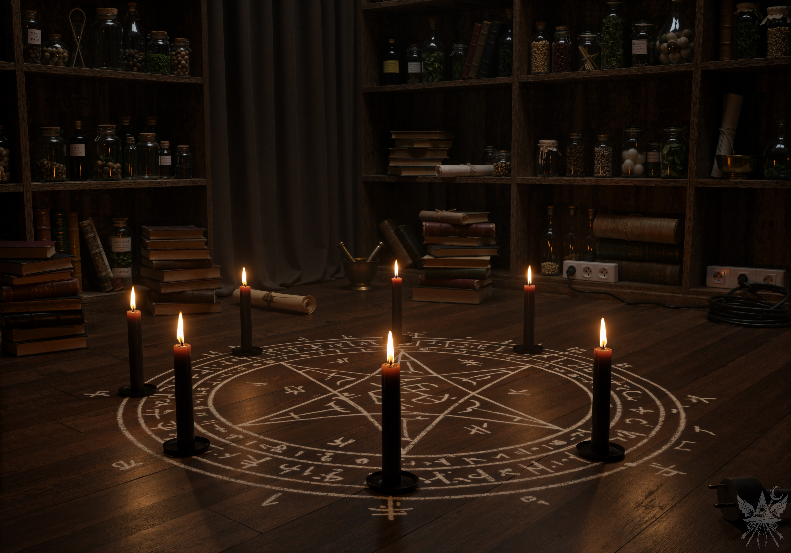
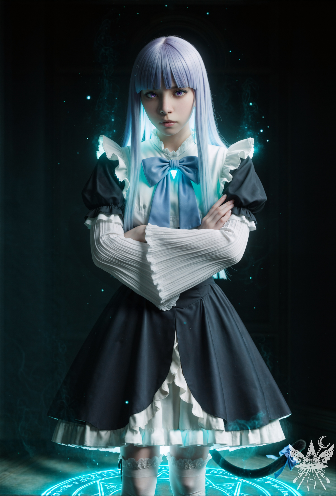

第1章 不完全な儀式

波が緩やかに岩肌を撫でる。雄大な岩壁は、過ぎ去った栄光の残骸のようにそびえ立っていた。狭苦しい路地では老朽化した車が轟音を立てて走り回り、排気ガスの不快な熱気が満ちている。交差点を行き交う人々は皆、せわしない。かつて世界を席巻したアレクサンドロス大王[1]アレクサンドロス大王：古代ギリシャのマケドニア王国の王が歩いたであろうこの石畳も、今や誰も気に留めることはなく、ただすり減った道の上を慌ただしい足音が通り過ぎていくだけだ。
（溜め息。世界はこんなはずじゃなかった。夏の終わりが近いというのに、太陽の照り返しは容赦なく肌を刺す）
（土産物屋か……。すっかり俗化してしまった。昔ながらの店は姿を消し、ろうそく一本手に入れるのにも、こんなくだらない店に入るしかないなんて）
同時に店に足を踏み入れたのは、休暇中のカップルだ。心からの安らぎなど、この場所にはもうない。あるのは騒がしい観光客を乗せたバスと、表面的なガイドツアーだけだ。
「いらっしゃいませー！ 観光客の方、何かお探しですか？」
（マニュアル通りの薄っぺらい対応。地元民にまで同じセリフを吐くとはね）
カップルはすぐさま棚に吸い寄せられ、貝殻や船の模型、安っぽいお守りなど、ありとあらゆる土産物に目を輝かせている。
「ろうそくはありますか？ 黒いろうそく」
「ああ、どこかにあったはずです……」
（よかった。もう時間がない。早く始めないと）
愛想のいい店主が持ってきたのは、奇妙なほど細長い黒いろうそくだった。表面には見慣れない文字がプリントされている。
「もっと普通の……文字が書いてないろうそくはありませんか？」
「何を仰いますか、お客様！ これはただのろうそくじゃありませんよ！ 最高級品！ 日本製です！」
（胡散臭い店主だ……。いや、今は手段を選んでいる余裕はない）
「じゃあ、10本ください」
（本当は7本で十分だが、正確な数を口にして無用な勘繰りをされるのは御免だ）
家は、神に見捨てられたような町外れにある。近くの古代遺跡が、かつての栄光を嘲笑うかのように佇んでいる。
だが、感傷に浸る暇はない。星々の配列は告げている。今日こそが、その日だと。

閉め切った暗い部屋。厚手のカーテンの隙間からわずかに漏れる陽光が、埃の舞う軌跡だけを空中に描いている。棚にはフラスコや古びた本がぎっしりと詰め込まれ、雑然としている。
（このカーペット、もう捨てようかしら。どうせ床しか使わないし）
チョークで床に円を描き、その内側に幾つもの記号を書き連ねていく。黒いろうそくを円周に沿って配置する。悪くない出来だ。
祖父母から受け継いだローブを羽織る。
（召喚相手の前では、それなりに見える姿でなくては。こちらの言葉を理解する存在ならいいけれど。最悪、あの拙いアラム語[2]アラム語：紀元前1000年ごろから話されていた、セム語派に属する古代の言語を引っ張り出すしかないわね……。まあ、やるだけやってみるか）
マッチを擦り、最初のろうそくに火を灯す。微かな硫黄の匂いが部屋に立ち込めた。
（むしろ、いい兆候かもしれない。さあ、始めよう）
すべてのろうそくに均一な炎が灯ったことを確認し、静寂の部屋に声を響かせる。
「おお、我らが最後の主よ！
我は汝に従わず。
されど汝の恐るべき力に敬意を表し、
頭を垂れん！」
ろうそくの炎が突如として轟々と燃え上がり、部屋が深い闇に沈み込む。
「我を守護したまえ、主よ。
天と地と冥府の力を以て」
突然、ろうそくの炎の一つが萎縮し、ほとんど消えかかる。側面にプリントされた漢字らしき模様が、不気味な光を放ち始めた。
（しまった……。あの土産物屋のろうそくなんて、買うべきじゃなかった……）
最初の灯りが落ちたのを皮切りに、残りの炎も次々と闇に呑まれていく。完全な暗闇が部屋を支配した瞬間、焼け付くような息苦しさが喉元を締め上げた。空気が重くのしかかり、呼吸ができない。
しかし、魔法陣の中心から青白い光が脈動し始め、奇妙な影を空間に投げかけた。光は弱々しいものの、粘り気のある闇を切り裂き、不気味な輪郭を浮かび上がらせる。影はどす黒くうねる波間を漂う小舟のように、こちらへ向かってゆっくりと這い寄ってくる。心臓が早鐘を打ち、息が詰まる。
だが、その影はチョークで描かれた円の境界でピタリと停止した。魔法陣が一段と強い青白い光を放つ。不完全な儀式でありながら、回路は繋がったのだ。円の真上に、白っぽい人影が朧げに浮かび上がる。
「やれやれ、誰がこんなやり方をするの？」
底抜けに退屈そうな、冷ややかな声が響いた。
「……？」
「粗末な道具に、陳腐な詩……。あなたには才能が欠けているみたいね。私の知っているある詩人を思い出すわ」
冷ややかな声とともに、薄紫色の瞳がこちらを射抜いた。見下ろしてくるその存在が身を揺らすたび、深い紫色の長い髪が揺れ、首元の青いリボンが微かに影を落とす。およそ伝承に聞く古代の悪魔とは結びつかない、仕立ての良さそうな白と黒のドレスの衣擦れの音が、静寂の部屋に響いた。

「ようこそ、闇の女主人。私はアレクサンドロスだ。君の名は？」
（いつものことだ。悪魔相手には、どれだけ異常な事態でも毅然とした態度を崩してはならない）
「まず、あなたはアレクサンドロスじゃないわね。私を騙そうなんて思わないこと」。酷薄な声が、安い虚勢をあっさりと切り捨てる。「でも、認めるところは認めましょう。あなたはこの強力な回路を開くことができた。そうでなければ、私はここに来られなかったのだから。私の名前はフレデリカ・ベルンカステル。奇跡の魔女よ」
「私のつまらない嘘、お許しください。悪魔というものは召喚者をあまり理解しないものですが……あなたは例外のようですね」
魔法陣が輝きを失い、かろうじて残っていたろうそくの炎も完全に消え去る。闇に支配されていた部屋に、朝の淡い光がゆっくりと差し込んできた。フレデリカはカーテンに近づいて静かにそれを開け放ち、空いている椅子に優雅に腰を下ろした。
「さあ、白状なさい。なぜあなたに、これほど強力な後援者が必要だったの？ 何を欲しがっているのかしら？」
「私が欲しいもの？ ずっと求めていたもの……？ ええ、単純なことです。私はずっと……」